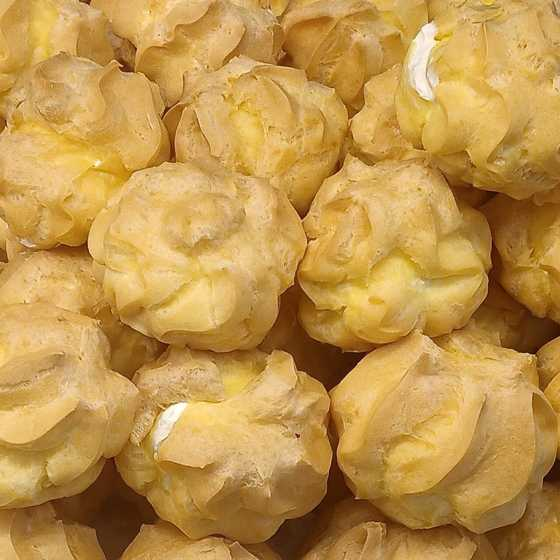
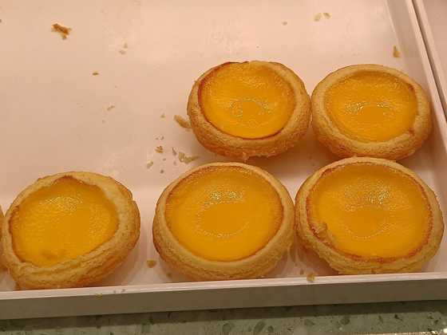
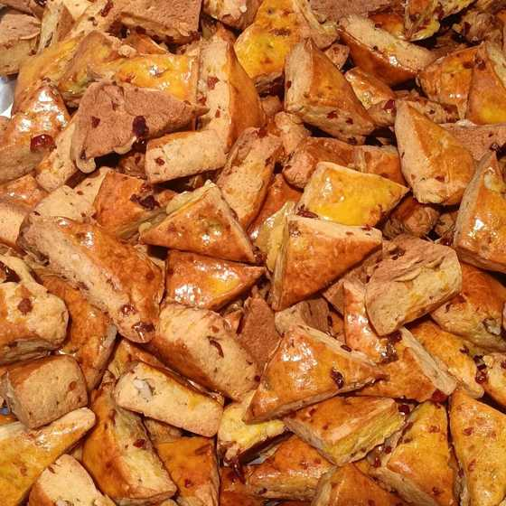
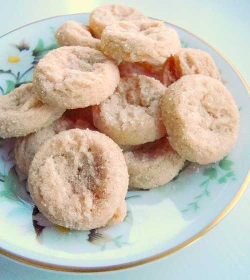
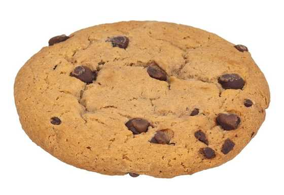
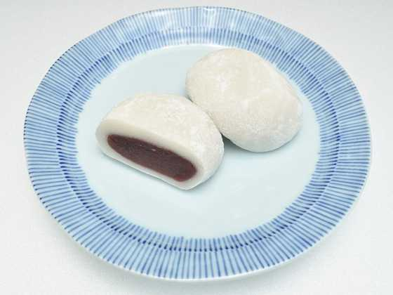
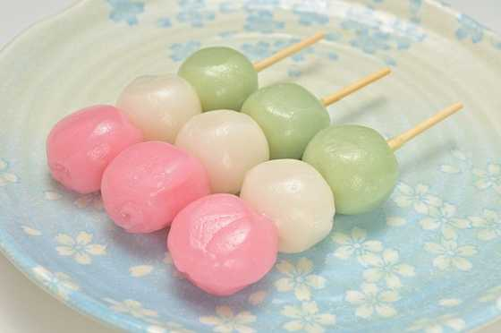
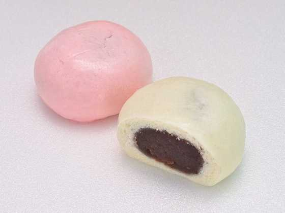

宮崎県小林市本町11
ふわしゅわ、ひとくちずつ。
蒸し焼きの台湾カステラ。
小林駅から歩いてすぐの小さなスイーツ店。しっとり軽い台湾カステラを、生クリームや季節のフルーツとともに。

掲載の写真はフリー素材のイメージです。店舗の実際の様子・商品ではありません(台湾カステラの写真は含まれません)。
お店の想い
「スイーツや」の看板商品は台湾カステラです。メレンゲをしっかり泡立て、上質な太白ごま油を使い、約1時間かけて蒸し焼きにすることで、しっとりと軽い食感に仕上げているとご紹介されています。
気温や湿度に合わせて製法を調整し、ふんわりした口当たりを保つ工夫も。2種類をブレンドした生クリームや自家製ガナッシュなど、組み合わせの楽しさも魅力です。
出典:タウン情報みやざき「スイーツや」特集(2023年3月)。内容は取材時点のもので、現在と異なる場合があります。店名の由来・開業の経緯は確認できていないため記載していません。

メニュー
紹介記事などで確認できた主な商品です。取り扱い・価格・販売状況は変わることがあるため、詳細は「準備中」です。最新情報はInstagramをご覧ください。



電話番号:準備中
口コミ(イメージ例)
以下は制作側が作成した創作のイメージ例です。実際のお客様の声ではありません。
イメージ例生クリームと生地が軽くて、甘いものが得意でなくても食べやすそうな印象です。手みやげにも選びたくなります。
イメージ例駅から近く、ふらっと立ち寄れる雰囲気。ショーケースを見ているだけで楽しくなりそうです。
イメージ例プリンやパンナコッタも気になります。季節ごとの新しい味に出会えたら嬉しいです。




アクセス
〒886-0008 宮崎県小林市本町11
電話:準備中 / 営業時間・定休日:準備中


